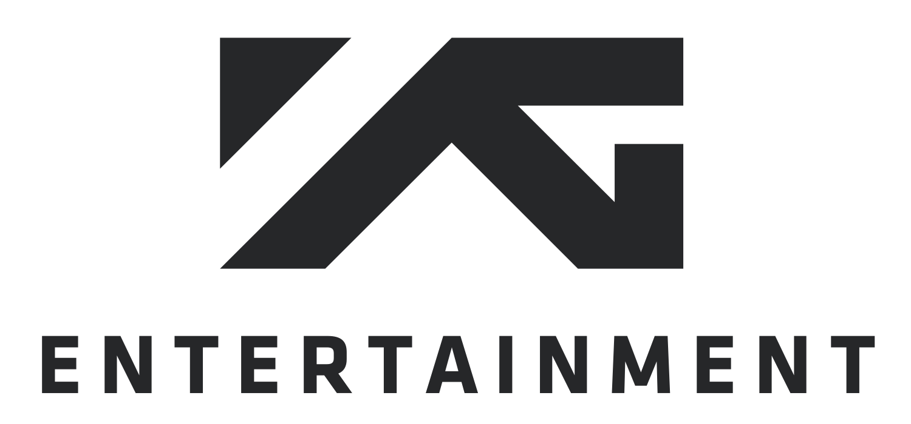

YG 엔터테인먼트 YG Entertainment
YG엔터테인먼트는 양현석이 1996년 설립한 대한민국의 종합 엔터테인먼트 기업이다. 빅뱅·블랙핑크·트레저 등을 배출하며 음악성과 개성 있는 아티스트로 'YG Family'를 구축했다.
최종 업데이트

YG 엔터테인먼트는 어떤 브랜드인가
YG엔터테인먼트는 양현석이 1996년 설립한 대한민국의 종합 엔터테인먼트 기업이다. 빅뱅·블랙핑크·트레저 등을 배출하며 음악성과 개성 있는 아티스트로 'YG Family'를 구축했다.
YG 엔터테인먼트는 어떻게 봐야 할까
YG엔터테인먼트는 힙합·개성 중심의 색채로 차별화한 대형 기획사로, 글로벌 걸그룹 블랙핑크의 성공이 상징적이다. 설립·운영 주체, 핵심 제품, 시장 포지션을 함께 보면 미디어·엔터테인먼트 안에서의 위치가 또렷해진다.
YG 엔터테인먼트는 어떻게 시작되고 성장했나
YG 엔터테인먼트는 1995년 설립된 한국 엔터테인먼트 기업입니다.
YG 엔터테인먼트의 브랜드 아이덴티티는 무엇인가
YG 엔터테인먼트의 정체성은 힙합 기반 음악 색채, 아티스트 개성, 글로벌 팬덤 콘텐츠에서 형성됩니다.
YG 엔터테인먼트의 대표 제품과 서비스는 무엇인가
아티스트 매니지먼트, 음반·음원 제작, 콘서트·MD 사업을 전개한다. 빅뱅·블랙핑크·트레저·베이비몬스터·악동뮤지션 등이 대표 아티스트다.
YG 엔터테인먼트는 누가 만들고 이끌었나
창업자는 서태지와 아이들 출신 양현석이다. 사명 'YG'는 그의 별칭 '양군'에서 유래했다.
YG 엔터테인먼트는 지금 어떤 상태인가
더 알아둘 것
서울 합정동에 기반하며 빅뱅·블랙핑크·트레저·베이비몬스터 등 'YG Family'를 구축했다.
YG 엔터테인먼트 연혁 — 주요 사건은 언제였나
YG 엔터테인먼트 로고는 어떻게 변해왔나
대표 로고대표 브랜드 마크
대표 로고 1보관 이미지 1자주 묻는 질문
YG 엔터테인먼트는 어느 나라 브랜드인가요?
YG 엔터테인먼트는 한국의 미디어·엔터테인먼트 브랜드입니다.
YG 엔터테인먼트는 언제 설립되었나요?
YG 엔터테인먼트는 1996년 설립되었습니다.
YG 엔터테인먼트의 브랜드 아이덴티티는 무엇인가요?
YG 엔터테인먼트의 정체성은 힙합 기반 음악 색채, 아티스트 개성, 글로벌 팬덤 콘텐츠에서 형성됩니다.
YG 엔터테인먼트의 대표 제품은 무엇인가요?
아티스트 매니지먼트, 음반·음원 제작, 콘서트·MD 사업을 전개한다.
YG 엔터테인먼트는 현재 어떤 상태인가요?
국가: 대한민국; 본사: 서울 합정동; 산업: 미디어·엔터테인먼트
YG 엔터테인먼트의 창업자는 누구인가요?
YG 엔터테인먼트의 창업자는 양현석입니다(위키데이터 기준).
YG 엔터테인먼트의 본사는 어디에 있나요?
YG 엔터테인먼트의 본사는 합정동에 있습니다(위키데이터 기준).
출처와 검증
YG 엔터테인먼트 관련 참고: 공식 웹사이트 · 위키데이터 Q50595 · 한국어 위키백과 · 영어 위키백과. 브랜드명은 한글과 원어를 함께 표기하되 데이터에 없는 표기는 만들지 않습니다. 기원 국가·설립연도는 검수된 정의문에서 확인된 값을 우선하고, 없을 때만 공식 웹사이트 URL이 일치하는 위키데이터 개체의 값을 씁니다. 위키데이터 값은 2026-09-07 기준입니다.